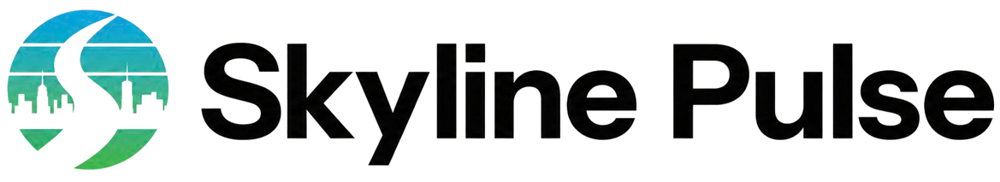
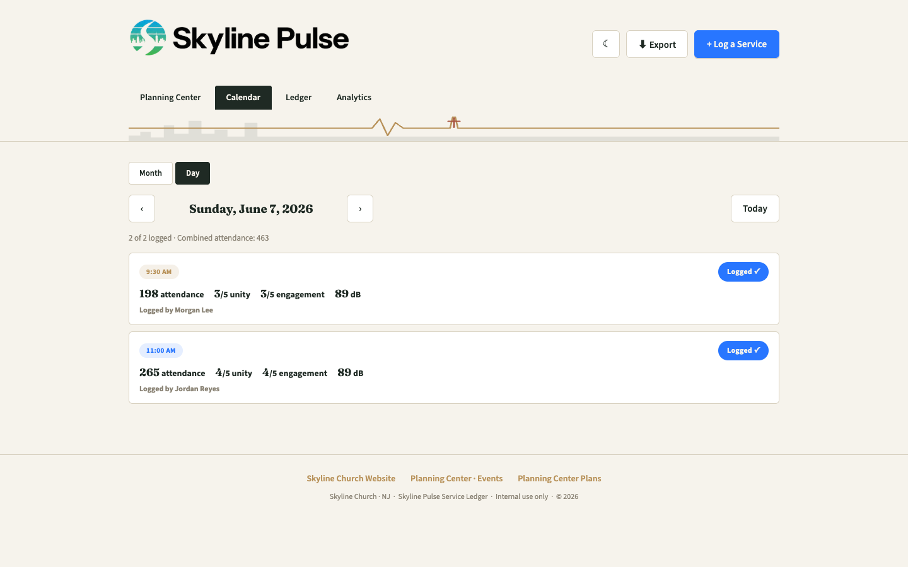
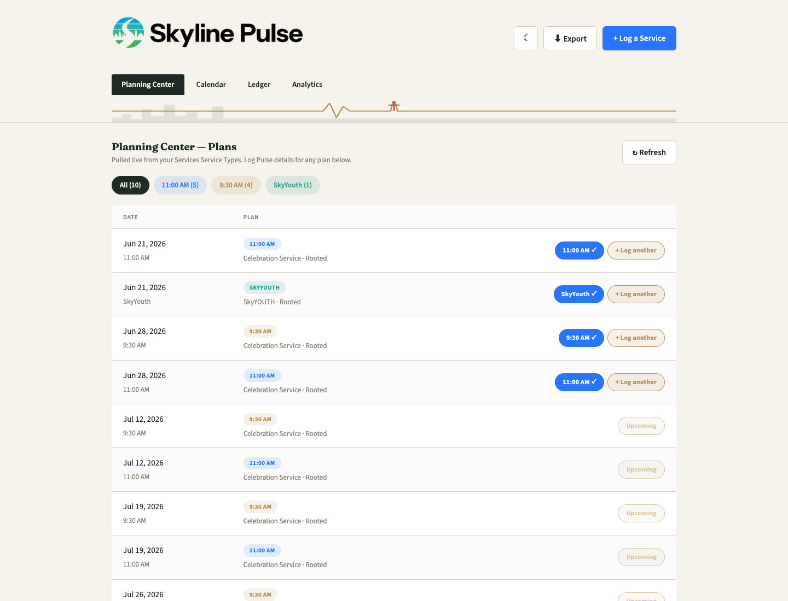
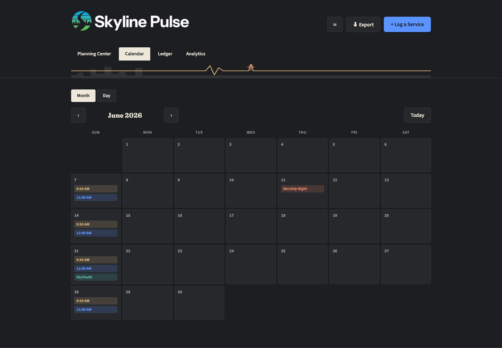
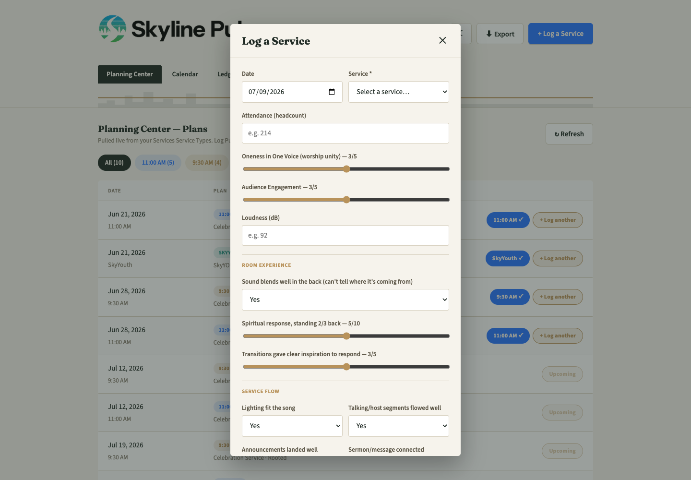
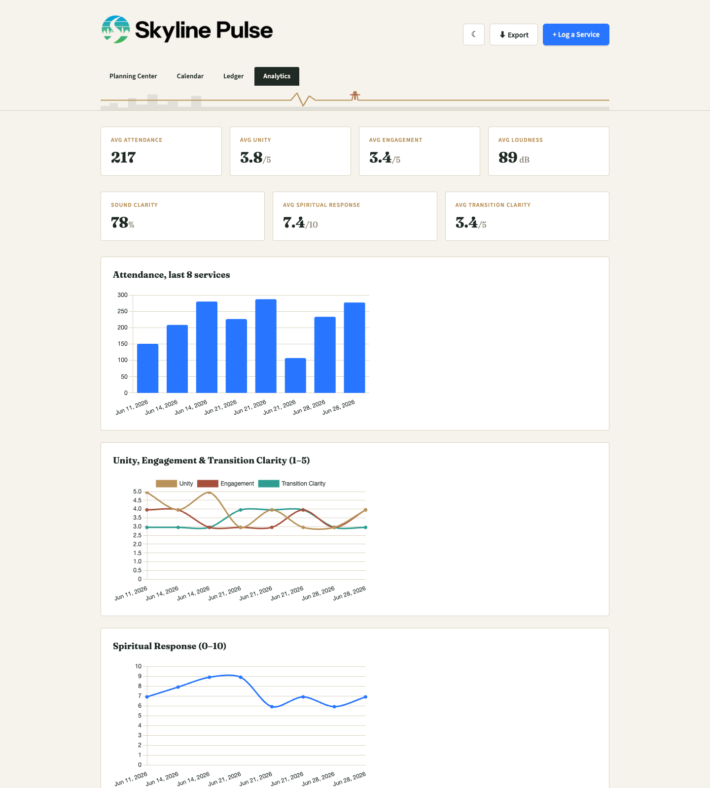
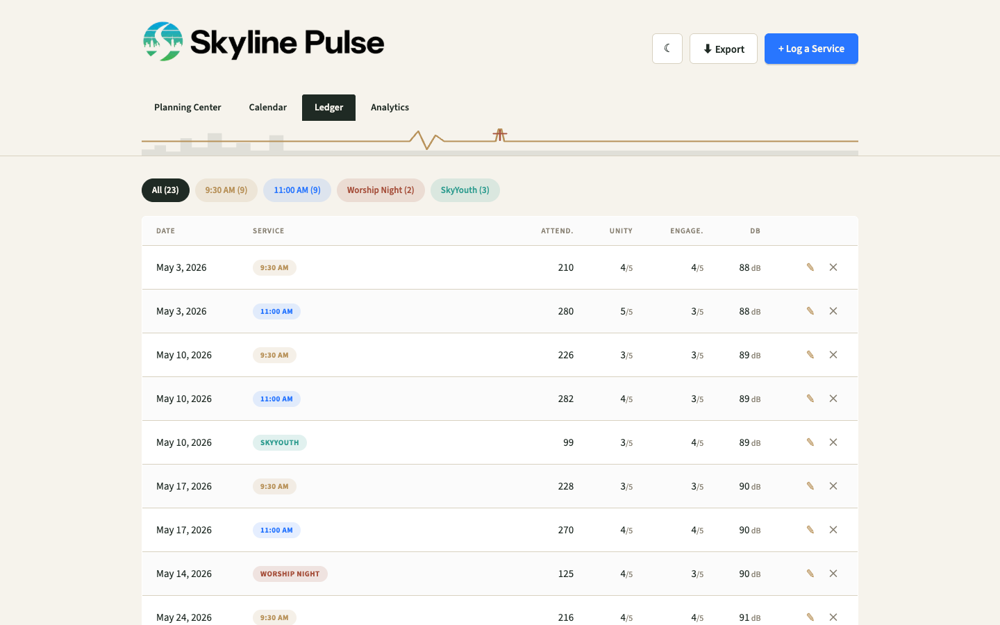
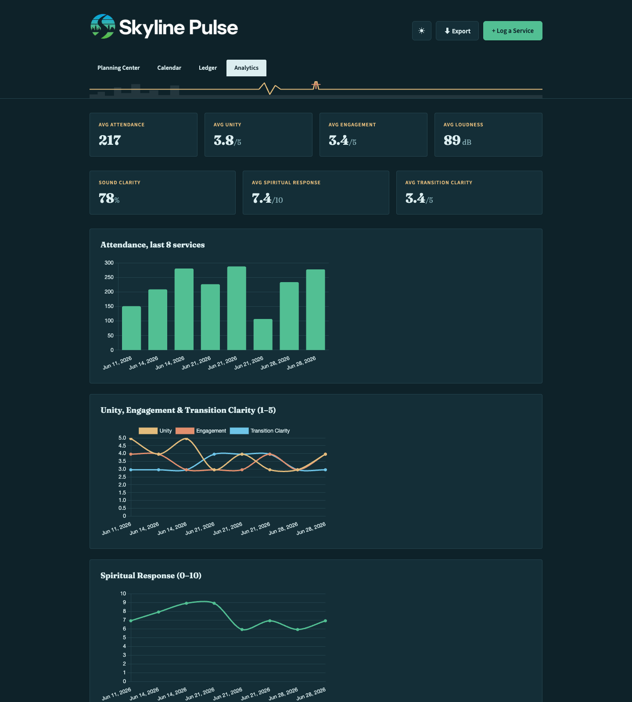

Skyline Pulse is a lightweight weekly ledger for worship teams — attendance, unity, engagement, room experience, and service flow, logged in under a minute and pulled straight from your Planning Center Plans.

No more digging through texts and spreadsheets to remember how loud 11:00 ran, or who filled in the details for a given Sunday. Pulse makes it a 60-second habit.
Attendance, worship unity, audience engagement, and loudness (dB) for every service, filterable by service type.
See exactly what's logged and what's still needed for any Sunday, at a glance — month grid or a focused day agenda.
Sound clarity in the back of the room, spiritual response 2/3 back, and how clearly transitions landed — the stuff that's easy to feel and hard to remember.
Did lighting fit the song? Did the talking segments, announcements, and sermon land the way they were planned? Track it every week.
Plans pull automatically from your Services Service Types — including sermon artwork and split 9:30/11:00 service times — so nothing's typed twice.
Trends across every measurement, plus a breakdown of who's been logging services, so the data stays honest and current.
No accounts to create, no app to install. One shared link, a name picked from a list, and you're logging.
Pulse reads directly from your Planning Center Services Service Types — pulling every Plan in a rolling window, matching it to a Pulse service type, and showing sermon artwork when it's attached.

Switch between a full month grid for planning ahead, or a focused day view built for the main event — Sunday morning — showing every logged detail per service in one scroll.

Attendance and loudness up top, then room experience and service flow below — each field designed around a real conversation the team already has after service.

Every measurement charted over time — attendance, unity, engagement, spiritual response, service flow — plus a breakdown of who's been logging, so the numbers stay accountable.

Pick a theme and Pulse remembers it on that device — including a full re-tint of every chart.


One HTML file. No build step, no framework, no server to maintain beyond what's already free-tier.
Postgres + Row Level Security as the backend, called directly from the browser.
Static hosting with auto-deploys on every push to main.
A small serverless proxy keeps the Planning Center API token off the client entirely.
Every analytics chart, themed live from the same CSS custom properties as the app.